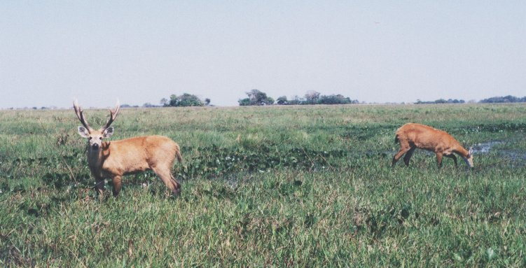
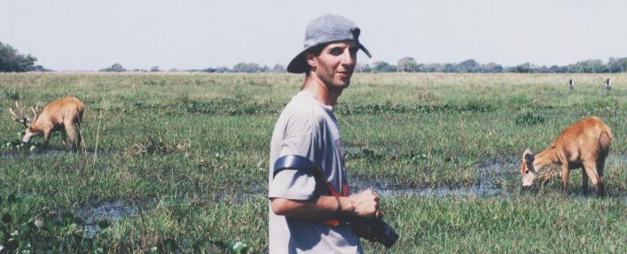
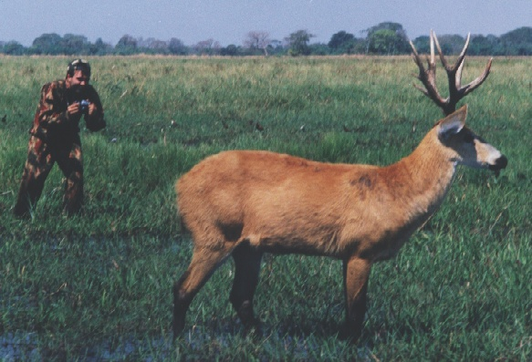
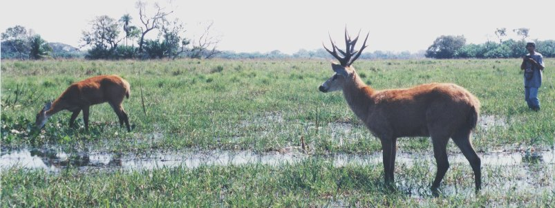
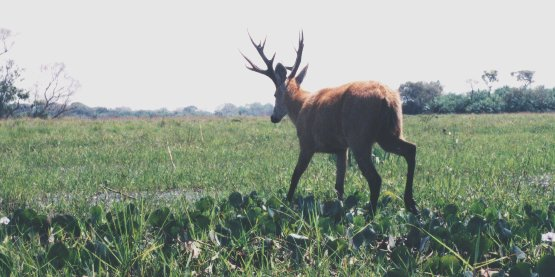
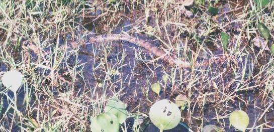
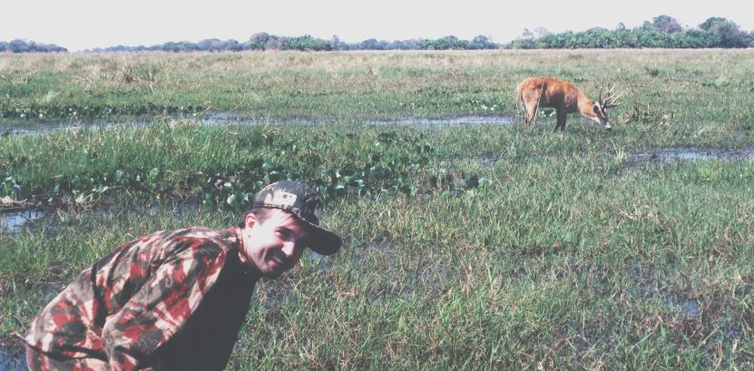

Espaço Cultural CEPEN
Galeria da Imagem
__
__
Exposição:
Vida Pantaneira
O cervo-do-pantanal

Local: Pantanal da Nhecolândia - MS - Brasil Foto: arquivo CEPEN / 358 / M. D. N. Xavier
Nas planuras pantaneiras, o olhar atento deste macho pode ser sinal de perigo para quem se aproxima.

Local: Pantanal da Nhecolândia - MS - Brasil Foto: arquivo CEPEN / 355p / M. D. N. Xavier
O pesquisador Walfrido Tomas
e um casal de Cevos-do-pantanal,
Blastocerus dichotomus,
espécie à qual muito se dedicou.
Obs.: ao fundo, à direita, aparecem dois atentos tuiuiús.
Aproximar-se de cervos-do-pantanal em campo aberto, requer conhecimento e habilidades específicas.
Walfrido Tomas, coordenando a ação, conduziu Xavier para bem próximo destes animais.

Local: Pantanal da Nhecolândia - MS - Brasil Foto: arquivo CEPEN / Walfrido Tomas
M. D. N. Xavier flagrado por Walfrido Tomas

Local: Pantanal da Nhecolândia - MS - Brasil Foto: arquivo CEPEN / 360p / M. D. N. Xavier
O macho (com galhadas), manteve-se em constante vigília,
conservando uma distância respeitável de no mínimo 4 metros.
Convém lembrar que em ocasiões especiais, um cervo que permite certa aproximação,
sentindo-se intimidado pode defender-se atacando.
W. Tomas, que aparece ao fundo, encontrou o jovem filhote deste casal,
escondido num capão de mato das proximidades.

Local: Pantanal da Nhecolândia - MS - Brasil Foto: arquivo CEPEN / 359p / M. D. N. Xavier
Caminhando com a musculatura tesa,
o macho afasta-se lentamente para evitar problemas.

Local: Pantanal da Nhecolândia - MS - Brasil Foto: arquivo CEPEN / 357p / M. D. N. Xavier
Ao caminhar nos alagados do pantanal,
convém olhar não apenas para os amplos horizontes.

Local: Pantanal da Nhecolândia - MS - Brasil Foto: arquivo CEPEN / 354p / W. Tomas
M. D. N. Xavier no cenário

 __
__